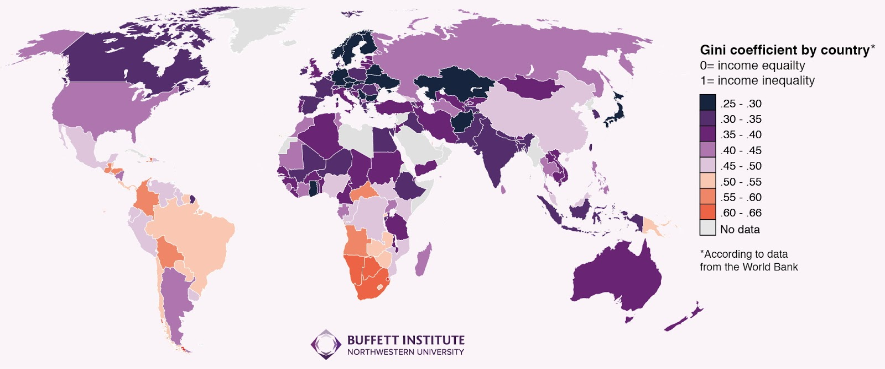

L’obiettivo 10 enuncia l’importanza di ridurre le disuguaglianze di ogni genere, tuttavia l’ineguaglianza persiste e rimangono grandi disparità di accesso alla sanità, all’educazione e ad altri servizi.
Inoltre, mentre la disparità di reddito tra i diversi paesi sembrerebbe essersi ridotta, la disparità all’interno di un medesimo paese è aumentata.
Aumenta il consenso sul fatto che la crescita economica non è sufficiente per ridurre la povertà se non si tratta di una crescita inclusiva e se non coinvolge le tre dimensioni dello sviluppo sostenibile (economica, sociale e ambientale). Per ridurre la disparità, le politiche dovrebbero essere universali e prestare attenzione ai bisogni delle popolazioni svantaggiate ed emarginate.
Dal 1990 al 2010 la disparità di reddito è aumentata dell’11%, mentre nei paesi in via di sviluppo il reddito è distribuito in maniera meno omogenea rispetto agli anni novanta.In alcuni paesi si è riuscito a contenere o ridurre le disparità di reddito raggiungendo elevati livelli di crescita, ma se non viene affrontata la disparità di opportunità, la disparità di reddito non può essere affrontata in maniera efficace.
In un sondaggio globale è emerso che le potenze politiche di tutto il mondo hanno riconosciuto che l’ineguaglianza nel loro paese è generalmente elevata e che presente una potenziale minaccia per lo sviluppo sociale ed economico, oltre a questo è emerso che nei paesi in via di sviluppo i bambini, che fanno parte del 20% della popolazione povera, hanno una probabilità fino a 3 volte maggiore di morire prima di aver compiuto i cinque anni rispetto ai bambini provenienti da famiglie benestanti; anche le donne delle aree rurali hanno una probabilità fino a tre volte maggiore di morire durante il parto rispetto alle donne che abitano in città. In Italia gli andamenti sono simili alle altre grandi economie europee (come Francia, Germania, Spagna), e forse l’Italia è anche meno disuguale, ma comunque il quadro generale resta preoccupante.
Ad esempio, mentre il 10% più ricco, (cioè circa 5 milioni di adulti) ha aumentato la sua quota di reddito nazionale guadagnando il 30% del reddito totale, la metà più povera degli italiani guadagna una quota sempre minore, circa il 24% del reddito italiano.Questo significa che il reddito totale italiano, così come riportato nei conti nazionali, è quasi mille miliardi e mezzo, quindi i 5 milioni di italiani più ricchi hanno mediamente un reddito di 90mila euro annui, mentre i 25 milioni di italiani più poveri si accontentano (in media) di circa 15mila euro lordi annui. Quello che più inquieta è l’andamento negativo della quota di reddito spettante ai più poveri contro l’andamento positivo (seppur stabile dal 2000 in poi) dei 5 milioni degli italiani più ricchi.
Si può quindi concludere dicendo che anche in Italia è presente una forte disuguaglianza dei redditi che attualmente non sembra ridursi. Tuttavia, questo è solo uno dei vari aspetti delle disuguaglianze nel nostro paese.